キッチン
ののじ
千切りピーラー キャベピィMAX
1本
¥1,540税込・2026年9月15日時点
レビューの要約
- 包丁もまな板も出さずにふわっと千切りができるの。キャベツを食べる量が増えたよ
- ぎゅっと巻いたキャベツだとシャキッと細く削れるの。毎日サラダのうちにぴったりだよ
気になる声思ったより刃が大きくてね削ると細かいのが飛び散るの。大きめのボウルを用意したいかな
販売価格・容量・送料はリンク先でご確認ください
家事・掃除・洗濯 / 2026.09.16
YouTubeの動画で紹介した15品です。楽天のレビューの評価が高い家事グッズの中から、良かった声とあわせて「買う前に知っておきたい」という声があるものをまとめました。
15 ITEMS 動画で紹介したもの
価格・レビュー件数は2026年9月15日に楽天のページで確認したものです。価格や在庫は変わることがあります。
気になる声は、使い方やおうちの条件によって感じ方が変わるものです。
サイズ・素材・性能などは各メーカー（ショップ）の表記です。
ののじ
1本
¥1,540税込・2026年9月15日時点
レビューの要約
気になる声思ったより刃が大きくてね削ると細かいのが飛び散るの。大きめのボウルを用意したいかな
販売価格・容量・送料はリンク先でご確認ください

曙産業
4個用
¥2,190税込・2026年9月15日時点
レビューの要約
気になる声洗ったあとフタの中に水が残って抜けにくいの。乾かす時間を見ておきたいかな
販売価格・容量・送料はリンク先でご確認ください
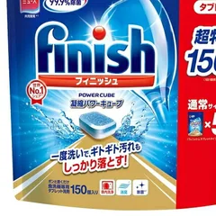
フィニッシュ
150個
¥2,068税込・2026年9月15日時点
レビューの要約
気になる声1個が思ったより小さくてね油汚れが多い日は落ちきらないの。そういう日は2個入れてるかな
販売価格・容量・送料はリンク先でご確認ください
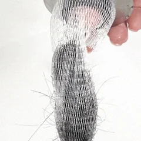
HUBATH
1個
¥1,980税込・2026年9月15日時点
レビューの要約
気になる声平らな縁に水が残りやすくて数週間で点々と錆が出たの。洗面ボウルにも少し移ったよ
販売価格・容量・送料はリンク先でご確認ください
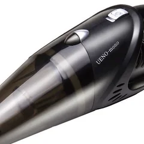
UENO-mono 吸龍
本体＋付属品
¥5,980税込・2026年9月15日時点
レビューの要約
気になる声車のマットに絡んだ髪の毛は何度こすっても吸い取れなくて結局手で取ることになったの
販売価格・容量・送料はリンク先でご確認ください
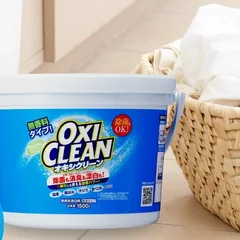
オキシクリーン
1.5kg（1500g）
¥1,650税込・2026年9月15日時点
レビューの要約
気になる声アルミの換気扇をつけおきしたら全体が黒ずんで変色しちゃってもう元には戻らなかったの
販売価格・容量・送料はリンク先でご確認ください
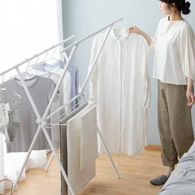
アイリスオーヤマ
単品
¥3,680税込・2026年9月15日時点
レビューの要約
気になる声思っていたより高さが低くて長いワンピースやバスタオルは干すと裾が床についちゃったの
販売価格・容量・送料はリンク先でご確認ください
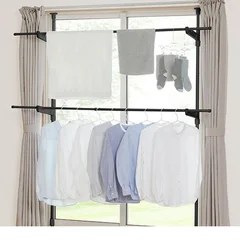
アイリスオーヤマ
ホワイト・2段
¥4,480税込・2026年9月15日時点
レビューの要約
気になる声上の段と下の段の間がせまくて大人の服を上の段に掛けると下の段の洗濯物にかぶっちゃうの
販売価格・容量・送料はリンク先でご確認ください
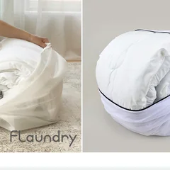
ダイヤ
1枚
¥1,399税込・2026年9月15日時点
レビューの要約
気になる声2、3回洗ったくらいでファスナーが外れちゃったの。長く使えるかは少し心配かな
販売価格・容量・送料はリンク先でご確認ください
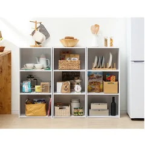
アイリスオーヤマ
3段
¥2,180税込・2026年9月15日時点
レビューの要約
気になる声板の角が少し剥げてたり木くずがけっこう出たの。床に何か敷いてから組みたいかな
販売価格・容量・送料はリンク先でご確認ください
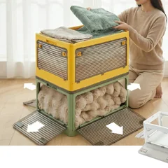
5面開閉 収納ボックス
S 27L
¥4,280税込・2026年9月15日時点
レビューの要約
気になる声ペットボトルを入れて重ねたら底が少したわんできたの。重い物は下の段にしたいかな
販売価格・容量・送料はリンク先でご確認ください
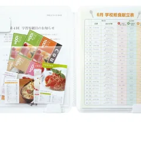
キングジム
A4・8ポケット
¥1,250税込・2026年9月15日時点
レビューの要約
気になる声表紙のホワイトボードに書いたら次の日なかなか消えなかったの。ペンも別に買う必要があったよ
販売価格・容量・送料はリンク先でご確認ください
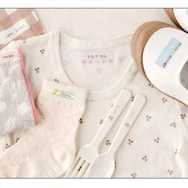
お名前シール製作所
¥1,750税込・2026年9月15日時点
レビューの要約
気になる声新しくなったシールは台紙からはがすときに端が伸びてほつれを取るのがひと手間だったの
販売価格・容量・送料はリンク先でご確認ください
せきぐちさんちの洗剤
200mL・1本
¥990税込・2026年9月15日時点
レビューの要約
気になる声色つきスニーカーのメッシュが黄色っぽく変わっちゃったの。白い上履き向けだと思ったよ
販売価格・容量・送料はリンク先でご確認ください
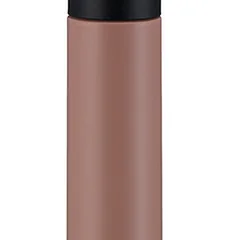
タイガー魔法瓶
350mL
¥2,680税込・2026年9月15日時点
レビューの要約
気になる声漏れが心配でギュッと締めたら飲みたいときに開かなくて力のいるフタだなって思ったの
販売価格・容量・送料はリンク先でご確認ください
SOURCE & NOTES
2026年9月15日に確認したレビューです。